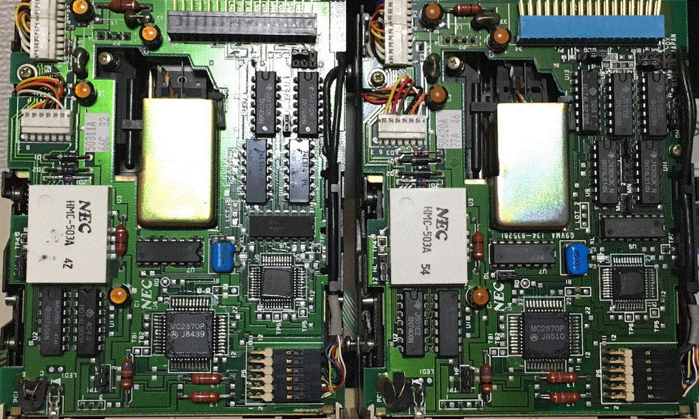

左: 前期型 右: 後期型
2台所有しているが制御基板が全く異なっており、
便宜的に前期型(1985/5)、後期型(1985/7)とする。
後期型は制御基板のICが1個多い
(34pコネクタ直下のICが2個なら前期、3個なら後期)
しかしドライブのP/Nは同じだし、制御基板の型番も同じである
(G9VMA 134-835281 DEC-32V0)
★ジャンパ設定について
以下は後期型で増設されたジャンパについての解説。
前期型ではDX(ドライブ番号)を除くと3つしかジャンパがない。
※HF, M1, HL の3つ
基本的にはFD1135Dと同様の設定内容と見受けられる
http://ematei.s602.xrea.com/kenkyu/fd1135d.htm
FD1035固有と思われるジャンパは2個ある
・MX: ドライブセレクト関連 デフォルトはOPEN
SHORTでDX関係なく常にドライブセレクト状態(DXはオープン)
・HF: 4ピンの信号設定. デフォルトは2
1=HEAD LOAD 2=IN USE
FD1035ではモータ回転と連動してヘッドロードが行われるが、
FD1135Dと同じヘッドロード条件（読込時のみロード）とする場合、
HF=1 M1=OPEN HL=1 (DH=1)とすると良い。
以下、FD1135Dに関するジャンパ設定のコピー
M1: ヘッドロードの条件 デフォルトはSHORT
SHORT = MOTOR ON有効時
OPEN = READY有効時
HL: ヘッドロードの条件 デフォルトは2
1=HEAD LOAD有効 2=HEAD LOAD無効
※HL=1とする場合はM1=OPEN, HF=1とする必要あり
以下のジャンパは後期型の制御基板のみに存在する
DH: ヘッドロードの条件 デフォルトは1
1=ドライブセレクト有効時 2=ドライブセレクト無視
MO: モータオン条件 デフォルトはSHORT
SHORT = MOTOR ON (MN = OPEN)
OPEN = ジャンパMNに依存
MN: モータオン条件 デフォルトはOPEN
1 = DRIVE SELECT有効時
2 = HEAD LOAD有効時
DL: ディスプレイランプ条件 デフォルトはSHORT
SHORTでランプ点灯
DCG: DISK CHANGE/READY デフォルトは1
1=READY 2=DISKCHANGE
|